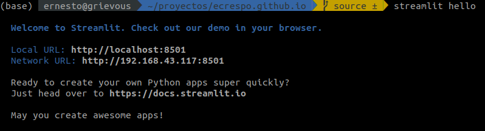
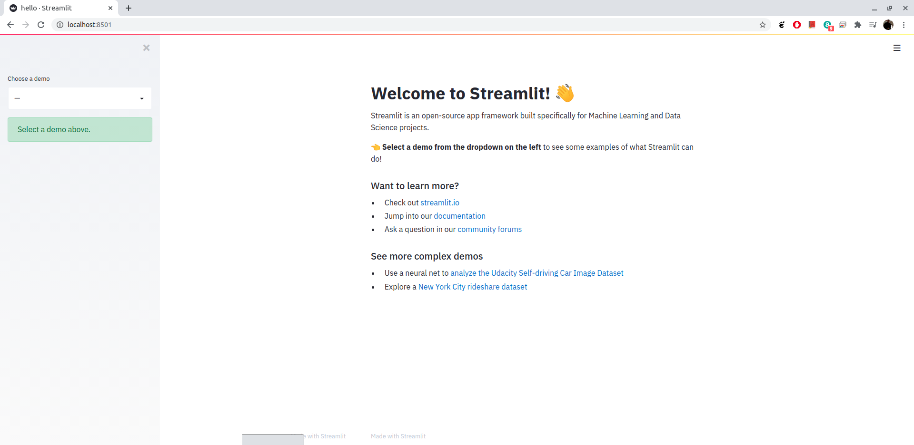
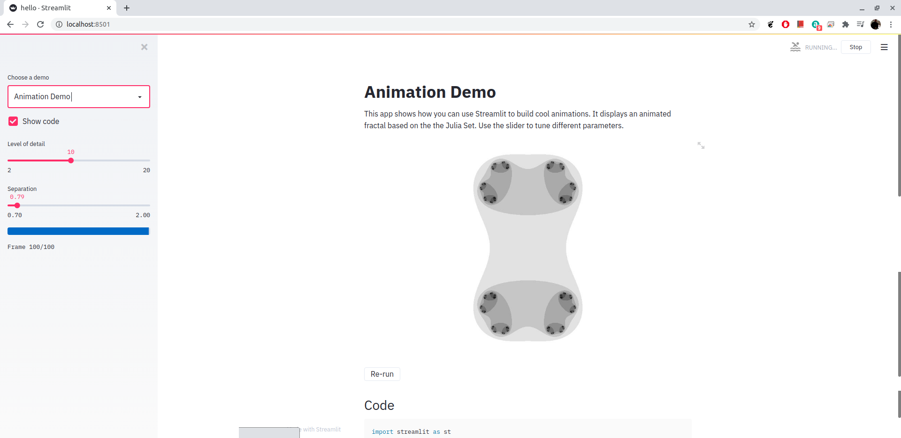
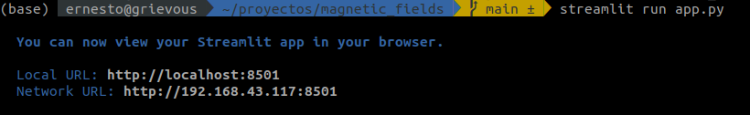
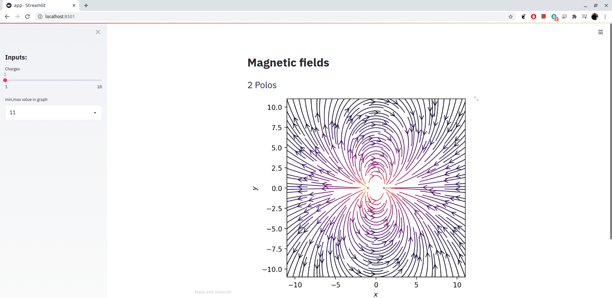

Visualización de campo magnético usando streamlit.
Posted on dom 25 octubre 2020 in Tutorial de Python • 3 min read
Este artículo muestra una introducción del framework Streamlit usando un viejo post Graficar líneas de campo eléctrico con matplotlib y Python.
Streamlit
Streamlit es un framework que será la forma más rápida de crear y compartir aplicaciones de datos.
Su documentación la pueden encontrar en el siguiente enlace.
Instalación
Para instalar streamlit se usa pip y se ejecuta un ejemplo base:
pip install streamlit
streamlit hello
Al ejecutar streamlit se levanta un servidor web en el puerto 8501 como se muestra a continuación:

Al abrir el enlace se tiene una página inicial como la que se muestra a continuación:

Y tiene varios demos como el siguiente:

Visualización de Campo magnético con Python y Streamlit
Como se mencionó antes, este post se basa en un artículo anterior sobre la visualización de campo magnético con Python y matplotlib. El código fuente lo puede ver en github o el notebook.
En próximo artículo se dará una introducción de los distintos componentes de Streamlit, por lo pronto se mostrará el código de visualización de campo magnético como webapp de la manera más sencilla posible.
La estructura de archivos del repositorio es la siguiente:
.
├── app.py
├── LICENSE
├── README.md
└── requirements.txt
El código de app.py se muestra a continuación:
import matplotlib.pyplot as plt
import numpy as np
import streamlit as st
from matplotlib.patches import Circle
# https://github.com/ecrespo/codigo_blog/blob/master/graficacion/campoelectric/graficar%2Bcampo%2Belectrico.ipynb
# https://github.com/ecrespo/codigo_blog/blob/master/graficacion/campoelectric/graficar%2Bcampo%2Belectrico.py
# https://www.seraph.to/graficar-lineas-de-campo-electrico-con-matplotlib-y-python.html#graficar-lineas-de-campo-electrico-con-matplotlib-y-python
@st.cache(allow_output_mutation=True)
def magnetic_field_e(q, r0, x, y) -> tuple:
"""Retorna el vector de campo eléctrico E=(Ex,Ey) de una carga q en r0"""
den = np.hypot(x - r0[0], y - r0[1]) ** 3
return q * (x - r0[0]) / den, q * (y - r0[1]) / den
@st.cache(allow_output_mutation=True)
def magnetic_field_vector(n: int, axis_x: int, axis_y: int) -> dict:
"""Cálculo del campo electromagnetico según la cantidad de dipolos.
Args:
n (int): Número de cargas para definir el dipolo
Returns:
dict: x,y,charges,Ex,Ey
"""
# # puntos de los ejes x e y.
nx, ny = 128, 128
x = np.linspace(-axis_x, axis_x, nx)
y = np.linspace(-axis_y, axis_y, ny)
X, Y = np.meshgrid(x, y)
# # Crear un multipolo con nq cargas
# count = número de q. En ese caso es 1 dipolo
count = n
nq = 2 ** int(count)
charges = [
(i % 2 * 2 - 1, (np.cos(2 * np.pi * i / nq), np.sin(2 * np.pi * i / nq)))
for i in range(nq)
]
# # Vector de campo eléctrico como componentes separados (Ex,Ey)
Ex, Ey = np.zeros((ny, nx)), np.zeros((ny, nx))
for charge in charges:
ex, ey = magnetic_field_e(*charge, x=X, y=Y)
Ex += ex
Ey += ey
return {"x": x, "y": y, "charges": charges, "Ex": Ex, "Ey": Ey}
def main():
"""Generación de la webapp con streamlit"""
# Definir título
st.title("Magnetic fields")
# Entrada de datos en el sidebar.
st.sidebar.header("Inputs:")
# min: 1, max: 5, default: 1
n = int(st.sidebar.slider("Charges", 1, 10, 1))
# SelectBox en sidebar
min_max_scale = int(
st.sidebar.selectbox("min,max value in graph", list(range(11, 21)))
)
# Graficar usando matplotlib
fig = plt.figure()
ax = fig.add_subplot(111)
# Se realiza el cálculod el vector de campo magnético.
res = magnetic_field_vector(n, min_max_scale, min_max_scale)
# Muestra la cantidad de polos que se definen en la entrada de datos.
st.header(f"{2*n} Polos")
# Dibujar las líneas de flujo con mapa de colores y estilos apropiados.
color = 2 * np.log(np.hypot(res["Ex"], res["Ey"]))
ax.streamplot(
res["x"],
res["y"],
res["Ex"],
res["Ey"],
color=color,
linewidth=1,
cmap=plt.cm.inferno,
density=2,
arrowstyle="->",
arrowsize=1.5,
)
# Agregar circulos para las cargas.
charge_colors = {True: "#aa0000", False: "#0000aa"}
for q, pos in res["charges"]:
ax.add_artist(Circle(pos, 0.05, color=charge_colors[q > 0]))
# Graficar
ax.set_xlabel("$x$")
ax.set_ylabel("$y$")
ax.set_xlim(-min_max_scale, min_max_scale)
ax.set_ylim(-min_max_scale, min_max_scale)
ax.set_aspect("equal")
# plt.show()
st.pyplot(fig)
if __name__ == "__main__":
main()
Al ejecutar streamlit con el nombre del archivo:
streamlit run app.py
Se tiene la siguiente imagen del arranque:

Imagen de la página:

Se puede ver la demostración de uso desde el vídeo en youtube:
En próximo artículo se muestra en detalle de los distintos componentes html que tiene Streamlit.
El repositorio donde pueden encontrar el código del artículo lo pueden ver en github
¡Haz tu donativo! Si te gustó el artículo puedes realizar un donativo con Bitcoin (BTC) usando la billetera digital de tu preferencia a la siguiente dirección: 17MtNybhdkA9GV3UNS6BTwPcuhjXoPrSzV
O Escaneando el código QR desde la billetera: